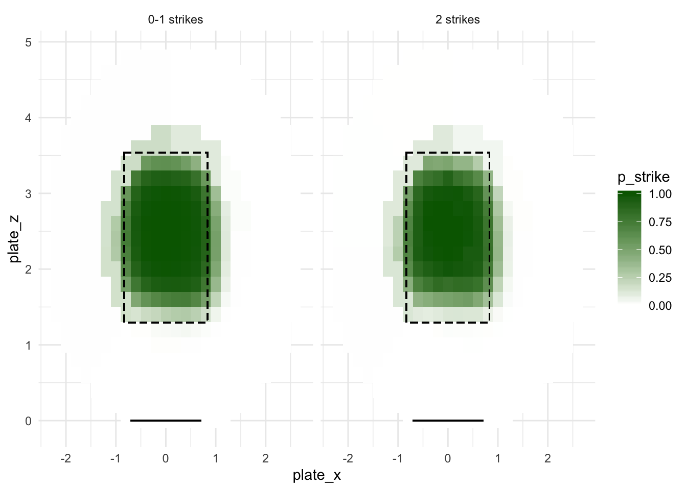
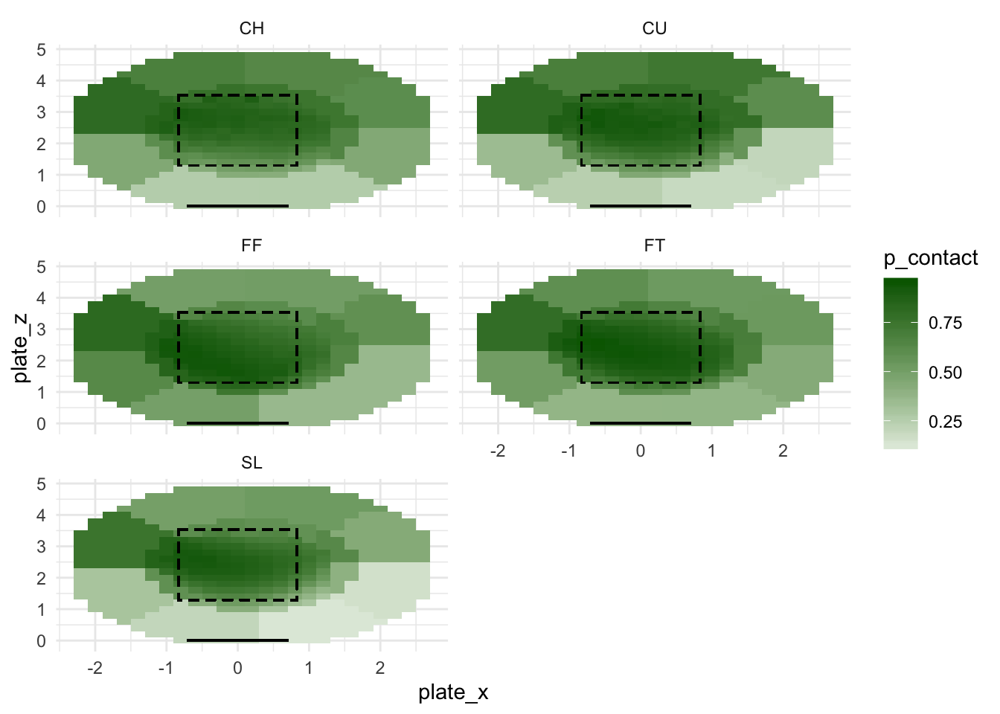
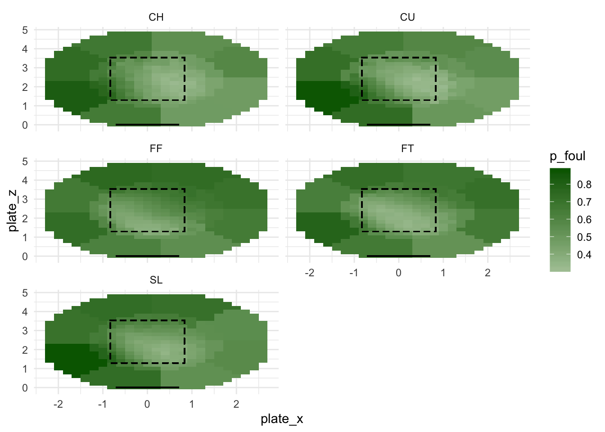
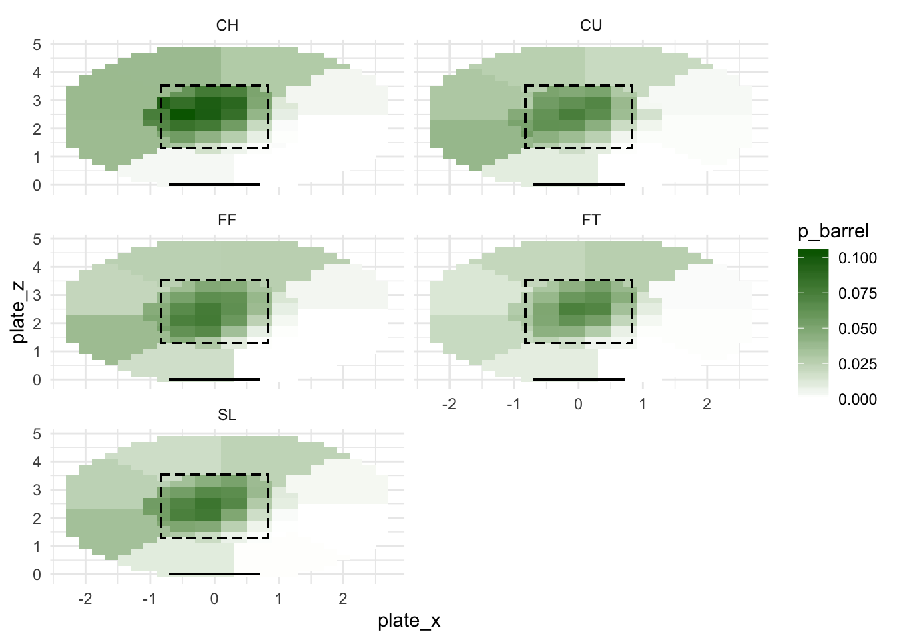
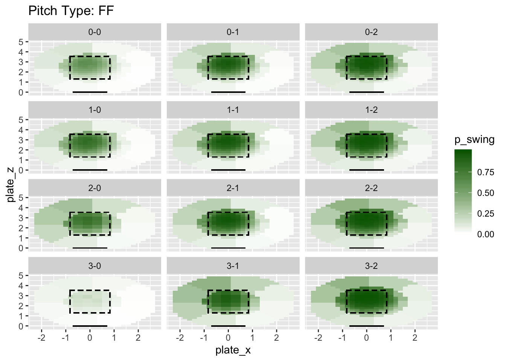
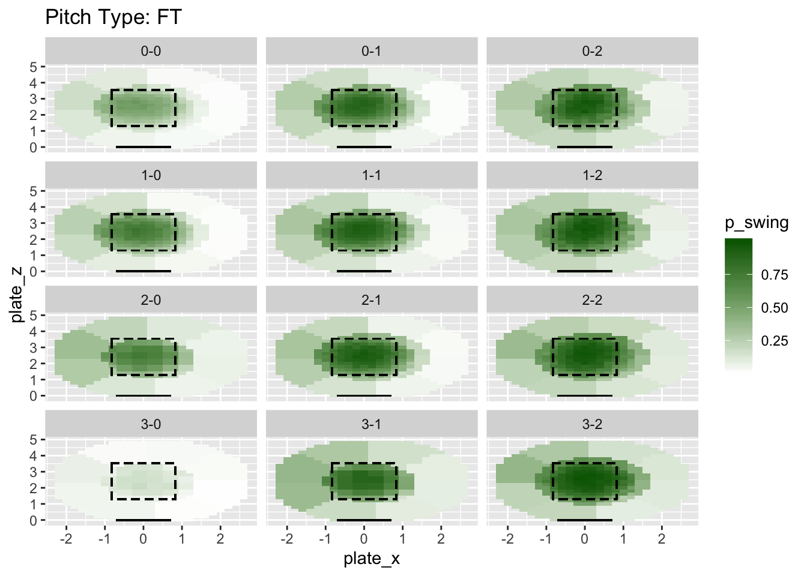
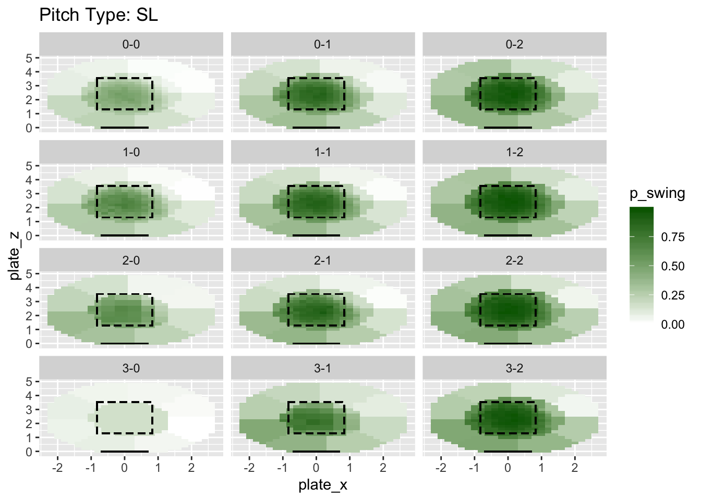
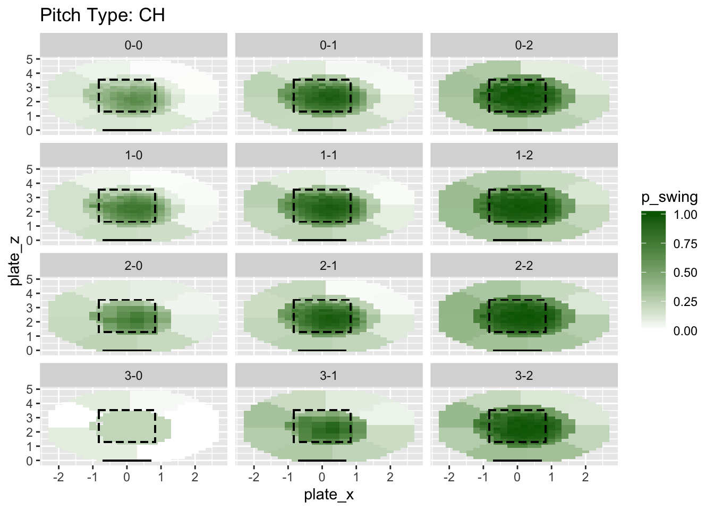
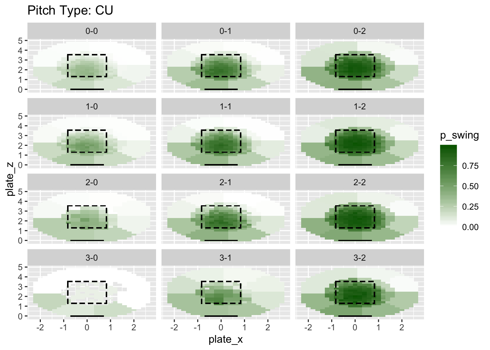

Last updated: 2020-02-23
Checks: 6 0
Knit directory: MLB/
This reproducible R Markdown analysis was created with workflowr (version 1.2.0). The Report tab describes the reproducibility checks that were applied when the results were created. The Past versions tab lists the development history.
Great! Since the R Markdown file has been committed to the Git repository, you know the exact version of the code that produced these results.
Great job! The global environment was empty. Objects defined in the global environment can affect the analysis in your R Markdown file in unknown ways. For reproduciblity it’s best to always run the code in an empty environment.
The command set.seed(20200202) was run prior to running the code in the R Markdown file. Setting a seed ensures that any results that rely on randomness, e.g. subsampling or permutations, are reproducible.
Great job! Recording the operating system, R version, and package versions is critical for reproducibility.
Nice! There were no cached chunks for this analysis, so you can be confident that you successfully produced the results during this run.
Great! You are using Git for version control. Tracking code development and connecting the code version to the results is critical for reproducibility. The version displayed above was the version of the Git repository at the time these results were generated.
Note that you need to be careful to ensure that all relevant files for the analysis have been committed to Git prior to generating the results (you can use wflow_publish or wflow_git_commit). workflowr only checks the R Markdown file, but you know if there are other scripts or data files that it depends on. Below is the status of the Git repository when the results were generated:
Ignored files:
Ignored: .RData
Ignored: .Rhistory
Ignored: .Rproj.user/
Ignored: data/mlb2015data.rds
Ignored: data/mlb2016data.rds
Ignored: data/mlb2017data.rds
Ignored: data/mlb2018data.rds
Ignored: data/mlb2019data.rds
Untracked files:
Untracked: .DS_Store
Untracked: code/BBrates.R
Untracked: code/park_factors.R
Untracked: code/xBB.R
Untracked: data/.DS_Store
Untracked: data/SteamerProjBatters2019.csv
Untracked: data/exit_velocity-2018.csv
Untracked: data/exit_velocity-2019.csv
Untracked: data/expected_stats-2018.csv
Untracked: data/expected_stats-2019.csv
Untracked: data/fangraphs-2018.csv
Untracked: data/fangraphs-2019.csv
Untracked: data/standard2015NP.csv
Untracked: data/standard2016.csv
Untracked: data/standard2016NP.csv
Untracked: data/standard2017.csv
Untracked: data/standard2017NP.csv
Untracked: data/standard2018.csv
Untracked: data/standard2018NP.csv
Untracked: data/standard2019.csv
Untracked: data/standard2019NP.csv
Untracked: output/mlb_eventvals.rds
Untracked: output/mlb_preproc.rds
Untracked: output/mlb_wprobs.rds
Unstaged changes:
Modified: .gitignore
Deleted: output/README.md
Note that any generated files, e.g. HTML, png, CSS, etc., are not included in this status report because it is ok for generated content to have uncommitted changes.
These are the previous versions of the R Markdown and HTML files. If you’ve configured a remote Git repository (see ?wflow_git_remote), click on the hyperlinks in the table below to view them.
| File | Version | Author | Date | Message |
|---|---|---|---|---|
| Rmd | 130f64d | Jason Willwerscheid | 2020-02-23 | wflow_publish(“analysis/countloc_pitchloc.Rmd”) |
| html | 14872ce | Jason Willwerscheid | 2020-02-22 | Build site. |
| Rmd | d3de4fb | Jason Willwerscheid | 2020-02-22 | wflow_publish(“analysis/countloc_pitchloc.Rmd”) |
| html | 903556d | Jason Willwerscheid | 2020-02-20 | Build site. |
| html | 14dfd37 | Jason Willwerscheid | 2020-02-20 | Build site. |
| Rmd | de63c46 | Jason Willwerscheid | 2020-02-20 | wflow_publish(“analysis/countloc_pitchloc.Rmd”) |
| html | 419221b | Jason Willwerscheid | 2020-02-20 | Build site. |
| Rmd | 6f42fc8 | Jason Willwerscheid | 2020-02-20 | wflow_publish(“analysis/countloc_pitchloc.Rmd”) |
| html | 65ab687 | Jason Willwerscheid | 2020-02-20 | Build site. |
| Rmd | dd8b4d8 | Jason Willwerscheid | 2020-02-20 | wflow_publish(“analysis/countloc_pitchloc.Rmd”) |
My basic strategy is to condition all of my probabilities on pitch location and, when it makes sense, pitch count and pitch type.
I need five sets of probabilities:
I condition everything on pitch type except for called strike probabilities. I condition swing probabilities on pitch count, and I condition strike probabilities on whether or not there are already two strikes (on average, umpires are slightly more reluctant to call strike three than strikes one and two). All probabilities are estimated by binning and calculating empirically observed proportions. In a few cases, I needed to coarsify some of the bins to get reasonably smooth probability surfaces. In the plots below, the dashed lines indicate the theoretical strike zone, and the line segment at plate_z = 0 is home plate.
I first calculate \[ p(\text{strike = 1} \mid \text{swing = 0, pitch location, I(strikes = 2)}) \]
suppressMessages(library(tidyverse))
all_pitches <- readRDS("output/mlb_preproc.rds")
bins <- all_pitches %>%
group_by(plate_x, plate_z, bin_ID, bin_type) %>%
summarize() %>%
ungroup()
plate_left <- -8.5 / 12
plate_right <- 8.5 / 12
sz_left <- plate_left - 2.94 / 2 / 12
sz_right <- plate_right + 2.94 / 2 / 12
sz_bot <- 15.53 / 12
sz_top <- 42.47 / 12
looks <- all_pitches %>%
filter(swing == 0) %>%
group_by(bin_ID, two_strikes = (strikes == 2)) %>%
summarize(p_strike = sum(called_strike) / sum(swing == 0)) %>%
ungroup()
ggplot(bins %>% left_join(looks, by = "bin_ID"),
aes(x = plate_x, y = plate_z, fill = p_strike)) +
geom_tile() +
scale_fill_gradient2(high = "dark green") +
theme_minimal() +
geom_rect(aes(xmin = sz_left, xmax = sz_right, ymin = sz_bot, ymax = sz_top),
col = "black", linetype = "dashed", alpha = 0) +
geom_segment(aes(x = plate_left, xend = plate_right, y = 0, yend = 0)) +
facet_wrap(~two_strikes,
labeller = labeller(two_strikes = c("FALSE" = "0-1 strikes",
"TRUE" = "2 strikes")))
Next I calculate \[ p(\text{contact = 1} \mid \text{swing = 1, pitch location, pitch type}) \] Recall that I flipped the \(x\)-axis for left-handed hitters, so there’s no need to condition on handedness.
contact <- all_pitches %>%
group_by(bin_ID, pitch_type) %>%
summarize(p_contact = ifelse(sum(swing) == 0, 0, sum(contact) / sum(swing))) %>%
ungroup()
ggplot(bins %>% left_join(contact, by = "bin_ID"),
aes(x = plate_x, y = plate_z, fill = p_contact)) +
geom_tile() +
scale_fill_gradient2(high = "dark green") +
theme_minimal() +
geom_rect(aes(xmin = sz_left, xmax = sz_right, ymin = sz_bot, ymax = sz_top),
col = "black", linetype = "dashed", alpha = 0) +
geom_segment(aes(x = plate_left, xend = plate_right, y = 0, yend = 0)) +
facet_wrap(~pitch_type, nrow = 3, ncol = 2)
Next up is \[ p(\text{foul = 1} \mid \text{contact = 1, pitch location, pitch type}) \]
fouls <- all_pitches %>%
group_by(bin_ID, pitch_type) %>%
summarize(p_foul = ifelse(sum(contact) == 0, 0, sum(foul) / sum(contact))) %>%
ungroup()
ggplot(bins %>% left_join(fouls, by = "bin_ID"),
aes(x = plate_x, y = plate_z, fill = p_foul)) +
geom_tile() +
scale_fill_gradient2(high = "dark green") +
theme_minimal() +
geom_rect(aes(xmin = sz_left, xmax = sz_right, ymin = sz_bot, ymax = sz_top),
col = "black", linetype = "dashed", alpha = 0) +
geom_segment(aes(x = plate_left, xend = plate_right, y = 0, yend = 0)) +
facet_wrap(~pitch_type, nrow = 3, ncol = 2)
Next is \[ p(\text{barrel = 1} \mid \text{contact = 1, pitch location, pitch type}) \]
Since barrels are in general low-probability events, I needed to coarsify the bins for all pitch types.
barrels <- all_pitches %>%
group_by(bin_ID, pitch_type) %>%
summarize(n = sum(contact),
p_barrel = ifelse(sum(contact) == 0, 0, sum(barrel) / sum(contact))) %>%
ungroup()
sub_bins <- bins %>%
mutate(coarse_x = ifelse((plate_x * 5) %% 2 == 0, plate_x - 0.2, plate_x),
coarse_z = ifelse((plate_z * 5) %% 2 == 0, plate_z + 0.2, plate_z),
coarse_bin = ifelse(bin_type == "octant",
sapply(str_split(bin_ID, ":"), `[[`, 1),
paste(coarse_x, coarse_z, sep = ","))) %>%
select(bin_ID, coarse_bin) %>%
distinct()
barrels <- barrels %>%
left_join(sub_bins, by = c("bin_ID")) %>%
group_by(coarse_bin, pitch_type) %>%
mutate(p_barrel = sum(p_barrel * n) / sum(n)) %>%
ungroup()
barrels <- barrels %>%
select(-n, -coarse_bin)
ggplot(bins %>% left_join(barrels, by = "bin_ID"),
aes(x = plate_x, y = plate_z, fill = p_barrel)) +
geom_tile() +
scale_fill_gradient2(high = "dark green") +
theme_minimal() +
geom_rect(aes(xmin = sz_left, xmax = sz_right, ymin = sz_bot, ymax = sz_top),
col = "black", linetype = "dashed", alpha = 0) +
geom_segment(aes(x = plate_left, xend = plate_right, y = 0, yend = 0)) +
facet_wrap(~pitch_type, nrow = 3, ncol = 2)
It remains to calculate
\[ p(\text{swing = 1} \mid \text{pitch count, pitch location, pitch type}) \]
swings <- all_pitches %>%
group_by(bin_ID, bin_type, pitch_type, balls, strikes) %>%
summarize(n = n(), p_swing = sum(swing) / n()) %>%
ungroup
# Coarsify bins for 3-0, 3-1, and 2-0:
swings <- swings %>%
left_join(sub_bins, by = c("bin_ID")) %>%
group_by(coarse_bin, pitch_type, balls, strikes) %>%
mutate(p_swing = ifelse(balls - strikes > 1,
sum(p_swing * n) / sum(n), p_swing)) %>%
ungroup()
# Coarsify again for off-speed pitches throw at 3-0:
swings <- swings %>%
group_by(bin_type, pitch_type, balls, strikes) %>%
mutate(p_swing = ifelse(bin_type == "coord" & balls == 3 & strikes == 0 &
pitch_type %in% c("CU", "CH", "SL"),
sum(p_swing * n) / sum(n), p_swing)) %>%
ungroup()
swings <- swings %>%
select(-n, -bin_type, -coarse_bin)
for (next_type in c("FF", "FT", "SL", "CH", "CU")) {
plot_df <- bins %>%
left_join(swings, by = "bin_ID") %>%
filter(pitch_type == next_type) %>%
mutate(pitch_count = paste(balls, strikes, sep = "-"))
plt <- ggplot(plot_df, aes(x = plate_x, y = plate_z, fill = p_swing)) +
geom_tile() +
scale_fill_gradient2(high = "dark green") +
facet_wrap(~pitch_count, nrow = 4, ncol = 3) +
geom_rect(aes(xmin = sz_left, xmax = sz_right, ymin = sz_bot, ymax = sz_top),
col = "black", linetype = "dashed", alpha = 0) +
geom_segment(aes(x = plate_left, xend = plate_right, y = 0, yend = 0)) +
ggtitle(paste("Pitch Type:", next_type))
plot(plt)
}

all_pitches <- all_pitches %>%
mutate(two_strikes = (strikes == 2)) %>%
left_join(looks, by = c("bin_ID", "two_strikes")) %>%
left_join(swings, by = c("bin_ID", "pitch_type", "balls", "strikes")) %>%
left_join(contact, by = c("bin_ID", "pitch_type")) %>%
left_join(fouls, by = c("bin_ID", "pitch_type")) %>%
left_join(barrels, by = c("bin_ID", "pitch_type")) %>%
select(-two_strikes)
saveRDS(all_pitches, "output/mlb_wprobs.rds")
sessionInfo()#> R version 3.5.3 (2019-03-11)
#> Platform: x86_64-apple-darwin15.6.0 (64-bit)
#> Running under: macOS Mojave 10.14.6
#>
#> Matrix products: default
#> BLAS: /Library/Frameworks/R.framework/Versions/3.5/Resources/lib/libRblas.0.dylib
#> LAPACK: /Library/Frameworks/R.framework/Versions/3.5/Resources/lib/libRlapack.dylib
#>
#> locale:
#> [1] en_US.UTF-8/en_US.UTF-8/en_US.UTF-8/C/en_US.UTF-8/en_US.UTF-8
#>
#> attached base packages:
#> [1] stats graphics grDevices utils datasets methods base
#>
#> other attached packages:
#> [1] forcats_0.4.0 stringr_1.4.0 dplyr_0.8.0.1 purrr_0.3.2
#> [5] readr_1.3.1 tidyr_0.8.3 tibble_2.1.1 ggplot2_3.2.0
#> [9] tidyverse_1.2.1
#>
#> loaded via a namespace (and not attached):
#> [1] Rcpp_1.0.1 cellranger_1.1.0 pillar_1.3.1 compiler_3.5.3
#> [5] git2r_0.25.2 workflowr_1.2.0 tools_3.5.3 digest_0.6.18
#> [9] lubridate_1.7.4 jsonlite_1.6 evaluate_0.13 nlme_3.1-137
#> [13] gtable_0.3.0 lattice_0.20-38 pkgconfig_2.0.2 rlang_0.4.2
#> [17] cli_1.1.0 rstudioapi_0.10 yaml_2.2.0 haven_2.1.1
#> [21] xfun_0.6 withr_2.1.2 xml2_1.2.0 httr_1.4.0
#> [25] knitr_1.22 hms_0.4.2 generics_0.0.2 fs_1.2.7
#> [29] rprojroot_1.3-2 grid_3.5.3 tidyselect_0.2.5 glue_1.3.1
#> [33] R6_2.4.0 readxl_1.3.1 rmarkdown_1.12 modelr_0.1.5
#> [37] magrittr_1.5 whisker_0.3-2 backports_1.1.3 scales_1.0.0
#> [41] htmltools_0.3.6 rvest_0.3.4 assertthat_0.2.1 colorspace_1.4-1
#> [45] labeling_0.3 stringi_1.4.3 lazyeval_0.2.2 munsell_0.5.0
#> [49] broom_0.5.1 crayon_1.3.4